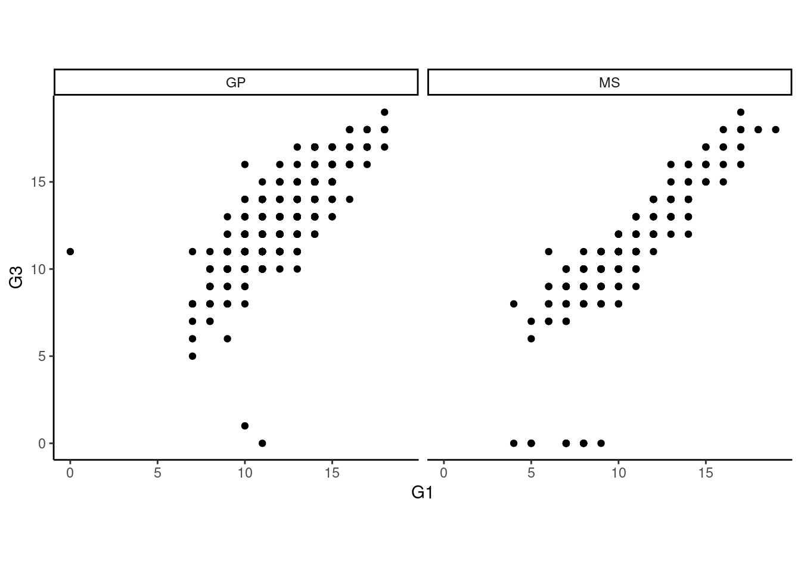
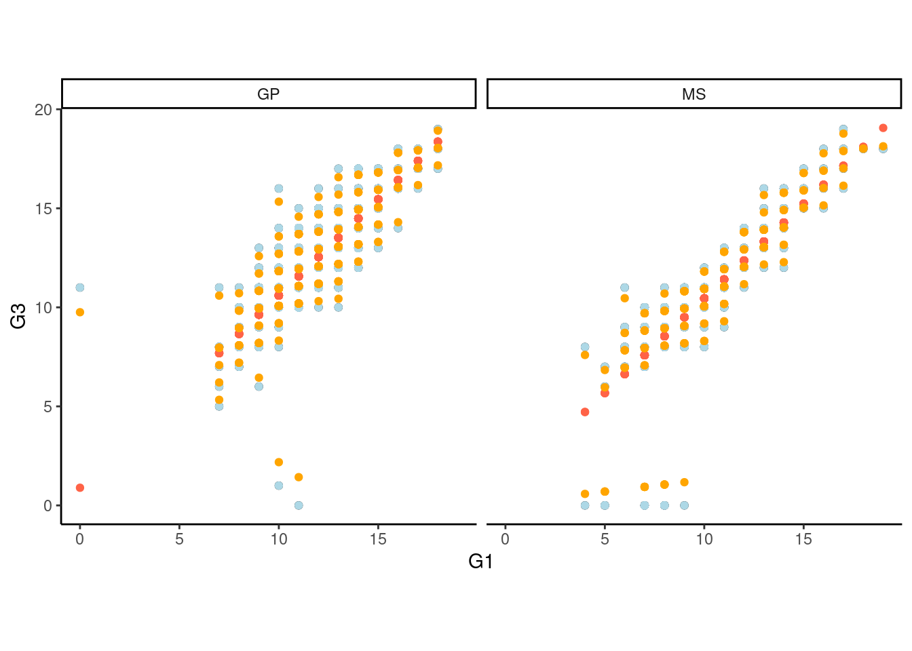

library(tidyverse)Day 28 - 10/25/2024
Questions before we start?
Mixed models
Why are we learning about mixed models?
Case study: Regression for several individuals
Assumptions of the General Linear Model
Assumptions of the General Linear Mixed Model
Increasing assumptions:
\(y_i \sim N(\mu_i, \sigma^2)\), \(\mu_i = \beta_0 + \beta_1 x_i\)
\(y_{ij} \sim N(\mu_{ij}, \sigma^2)\), \(\mu_{ij} = \beta_{0i} + \beta_1 x_{ij}\)
\(y_{ij}|b_{0i} \sim N(\mu_{ij}, \sigma^2)\), \(\mu_{ij} = \beta_{0} + b_{0i} + \beta_1 x_{ij}\), \(b_{0i} \sim N(0, \sigma^2_0)\)
\(y_{ij}|b_{0i} \sim N(\mu_{ij}, \sigma^2)\), \(\mu_{ij} = \beta_{0} + b_{0i} + \beta_1 x_{ij}\), \(\begin{bmatrix}b_{0i} \\ b_{1i} \end{bmatrix} \sim N \left( \begin{bmatrix}0 \\ 0 \end{bmatrix}, \begin{bmatrix}\sigma^2_{0} & \sigma^2_{01} \\ \sigma^2_{01} & \sigma^2_{1} \end{bmatrix} \right)\).
What implications do random effects have over modeling as fixed effects?
What minimum information would we need?
Applied example
ggplot2::theme_set(
theme_classic()+
theme(aspect.ratio = 1))dd <- read.csv("data/student-por.csv") %>%
rownames_to_column("student_ID") dd %>%
ggplot(aes(G1, G3))+
geom_point()+
facet_wrap(~school)
library(nlme)m1 <- lm(G3 ~ G1 : school, data = dd)
m2 <- lm(G3 ~ G1 : school + student_ID , data = dd)
coef(m2)[1:10] (Intercept) student_ID10 student_ID100 student_ID101 student_ID102
11 2 2 -3 5
student_ID103 student_ID104 student_ID105 student_ID106 student_ID107
1 -1 5 -1 -1 m3 <- lme(G3 ~ G1 : school, random = ~ 1|student_ID, data = dd)
m3Linear mixed-effects model fit by REML
Data: dd
Log-restricted-likelihood: -1315.996
Fixed: G3 ~ G1:school
(Intercept) G1:schoolGP G1:schoolMS
0.8921246 0.9708224 0.9561604
Random effects:
Formula: ~1 | student_ID
(Intercept) Residual
StdDev: 1.704493 0.639185
Number of Observations: 649
Number of Groups: 649 dd_predict <- expand.grid(G1 = min(dd$G1):max(dd$G1),
school = unique(dd$school),
sex = unique(dd$sex),
student_ID = unique(dd$student_ID))
dd_predict$p1 <- predict(m1, dd_predict)
dd_predict$p2 <- predict(m2, dd_predict)Warning in predict.lm(m2, dd_predict): prediction from rank-deficient fit;
attr(*, "non-estim") has doubtful casesdd_predict$p3 <- predict(m3, dd_predict)dd$p1 <- predict(m1, dd)
dd$p2 <- predict(m2, dd)
dd$p3 <- predict(m3, dd)
dd %>%
ggplot(aes())+
facet_wrap(~school)+
geom_point(aes(x =G1, y=G3))+
geom_point(aes(x=G1, y=p1), color = 'tomato')+
geom_point(aes(x=G1, y=p2, group = school), color = 'lightblue')+
geom_point(aes(x=G1, y=p3, group = school), color = 'orange')